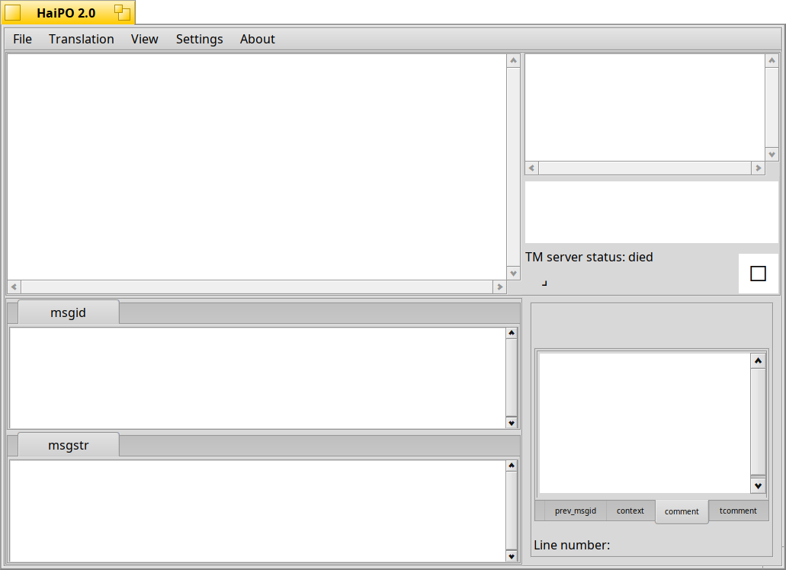

Topics
|
A quite
helpful
editor for Portable Objcect files
Sep
30, 2024 by Fabio Tomat aka
TmTFx
This program, written in python
3.10, is a Portable Object file editor, a gettext file format used
for software localizations.
It provides a list of the source strings available in your po file,
and let you modify the translations.
It has some very nice functions, starting from the simplest and most
obvious such as the display of the comments provided by the developers
and personal comments, to the most interesting such as the integrated
spell checker and the translation memory, which can be local or remote.
The program relies on Haiku-PyAPI for the front-end and a lot of
python libraries for the back-end, such as (hunspell through) pyenchant, translate tools, babel, Levenshtein and so on...
The
code is released under MIT license:
Copyright (c) 2024 Fabio Tomat
Permission is hereby granted, free of charge, to any person obtaining a copy
of this software and associated documentation files (the "Software"), to deal
in the Software without restriction, including without limitation the rights
to use, copy, modify, merge, publish, distribute, sublicense, and/or sell
copies of the Software, and to permit persons to whom the Software is
furnished to do so, subject to the following conditions:
The above copyright notice and this permission notice shall be included in
all copies or substantial portions of the Software.
THE SOFTWARE IS PROVIDED "AS IS", WITHOUT WARRANTY OF ANY KIND, EXPRESS OR
IMPLIED, INCLUDING BUT NOT LIMITED TO THE WARRANTIES OF MERCHANTABILITY,
FITNESS FOR A PARTICULAR PURPOSE AND NONINFRINGEMENT. IN NO EVENT SHALL THE
AUTHORS OR COPYRIGHT HOLDERS BE LIABLE FOR ANY CLAIM, DAMAGES OR OTHER
LIABILITY, WHETHER IN AN ACTION OF CONTRACT, TORT OR OTHERWISE, ARISING FROM,
OUT OF OR IN CONNECTION WITH THE SOFTWARE OR THE USE OR OTHER DEALINGS IN
THE SOFTWARE.
HaiPO looks like this:

|